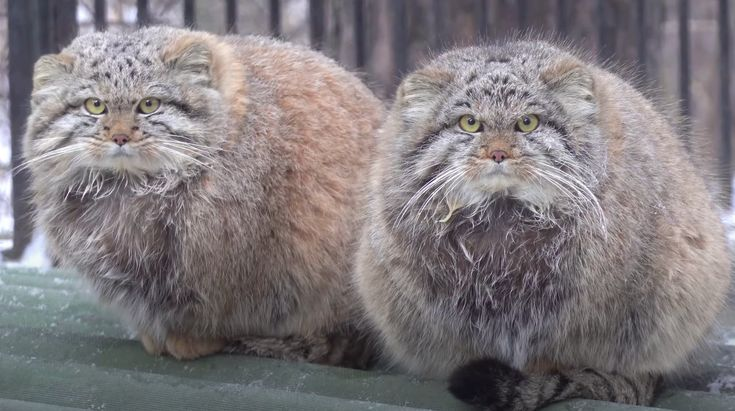

Sejarah
.jpg)
Pallas cat, atau dikenal juga sebagai kucing Pallas atau manul (Otocolobus manul)
adalah spesies kucing liar yang hidup di dataran tinggi dan padang rumput Asia Tengah, khususnya di wilayah Mongolia, Siberia, dan pegunungan Asia Timur hingga Iran.
Mereka terkenal karena bentuk tubuh yang gempal, wajah lebar, dan bulu yang sangat tebal dan lebat, membuatnya terlihat besar dan berbeda dari jenis kucing liar lainnya.
Penampilan Fisik

Wajah kucing Pallas memiliki bentuk bulat dan ekspresi yang tampak marah atau garang karena bentuk matanya yang unik dan pupilnya yang bulat,
tidak seperti kebanyakan kucing lainnya yang memiliki pupil vertikal.
Bulu mereka sangat tebal, dengan panjang mencapai dua kali lipat lebih tebal di musim dingin untuk bertahan dari suhu ekstrem di habitatnya.
Ukuran

Kucing ini tergolong kecil, dengan panjang tubuh sekitar 46-65 cm dan berat sekitar 2,5 hingga 4,5 kg.
Meski tampak besar, bulu tebalnya membuat ukuran tubuhnya terlihat lebih besar dari ukuran sebenarnya.
Habitat
.jpg)
Mereka hidup di wilayah yang sangat terpencil,
seperti gurun dan padang rumput berbatu di pegunungan pada ketinggian hingga 4.800 meter.
Habitat ini memberikan perlindungan dari predator dan iklim yang sangat dingin.
Perilaku

Kucing Pallas adalah hewan soliter dan lebih aktif pada sore hingga malam hari.
Mereka sangat sulit ditemukan karena sifatnya yang pemalu dan pandai bersembunyi.
Mereka juga pelari yang lambat, sehingga lebih sering mengandalkan kamuflase untuk menghindari bahaya daripada melarikan diri.
Makanan
.jpg)
Diet kucing Pallas terutama terdiri dari hewan kecil seperti tikus, pika, burung, dan mamalia kecil lainnya.
Mereka adalah pemburu ulung, namun bergerak lambat dan lebih mengandalkan keterampilan mengendap-endap untuk menangkap mangsanya.
Kucing Pallas juga terdaftar sebagai spesies yang rentan. Ancaman utama mereka adalah perburuan, hilangnya habitat, dan penurunan populasi mangsa.
Bulu mereka yang indah membuatnya diburu, dan habitat alaminya terancam oleh aktivitas manusia,
Seperti penggembalaan ternak dan pembangunan infrastruktur.